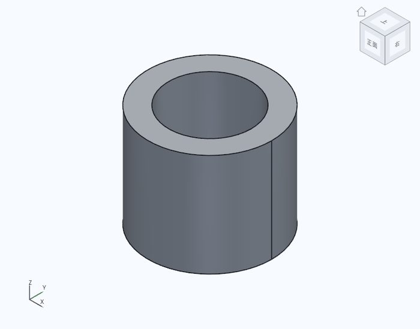
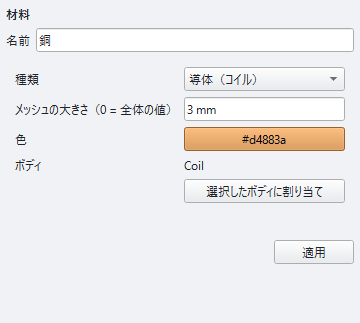
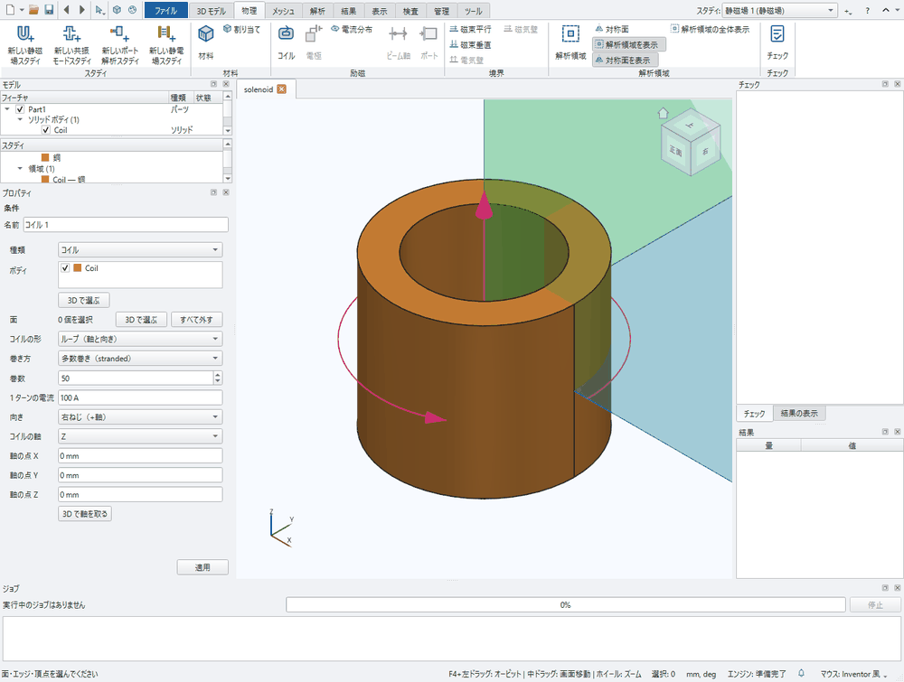
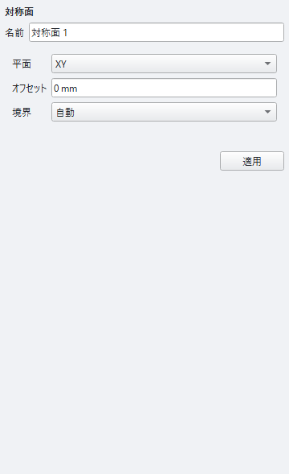
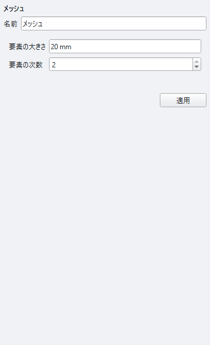
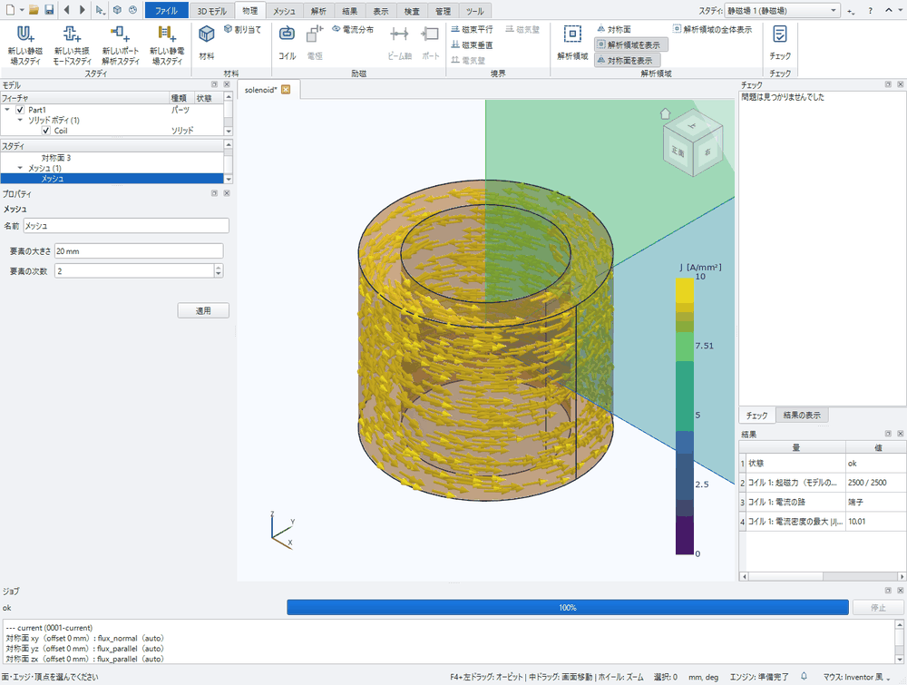
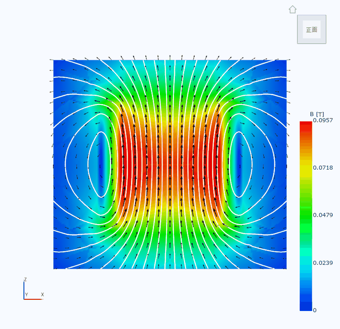
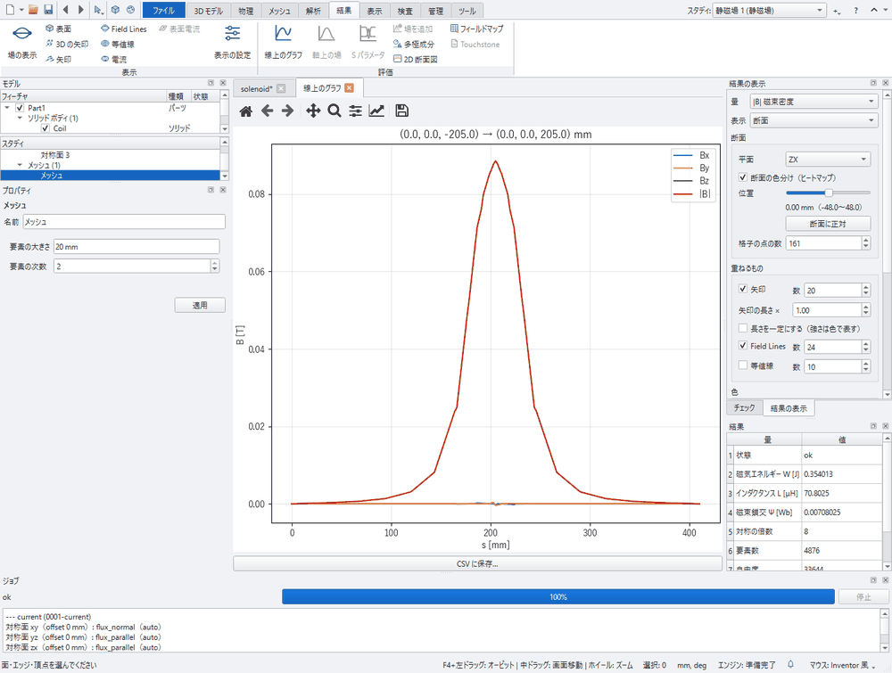

第 15 章
はじめての電磁場解析（ソレノイド）
この章では、厚いソレノイドの中心の磁場を、静磁場のスタディで一通り解きます。形状 → スタディ → 材料 → コイル → 対称面とメッシュ → 電流分布のプレビュー → 解析 → 結果の順に進めます。読み終えると、電磁場解析の基本の操作が分かります。
題材は、内半径 20 mm・外半径 30 mm・長さ 50 mm の円筒のコイル（50 ターン × 100 A）です。理論値（一様な電流密度の厚いソレノイドの中心）は Bz = 0.0890 T です。設定の済んだものは examples/solenoid.emrm です。
15.1 形状を作る
コイルのボディ（中が空いた円筒）を作ります。CAD の操作は第 I 部にあります（第 6 章）。
［3D モデル］タブで、XY 平面から z = −25 mm の作業平面を作り、その上に直径 60 mm・高さ 50 mm の円柱を作ります。
z = +25 mm の作業平面を作り、直径 40 mm・高さ 50 mm の円柱を［切り取り］で作ります。穴のあいた円筒が、コイルのボディになります。

図 15-1 コイルのボディ（中が空いた円筒）。z 軸が中心を通ります。

15.2 スタディを作り、材料を設定する
リボンの［物理］タブ → ［スタディ］パネル → ［新しい静磁場スタディ］をクリックします。リボンの右上の［+］のメニューからも作れます。スタディには、材料［空気］・解析領域・メッシュ・解析の設定が最初から入っています。スタディのブラウザの［領域］には、形状のソリッド ボディがブラウザと同じ名前で並びます（初めはどれも空気）。
3D ビューで、コイルのボディの面をクリックして選びます。
リボンの［物理］タブ → ［材料］パネル → ［材料］をクリックします。新しい材料ができ、選んでいたボディに割り当てられます。プロパティ パネルで、名前を
銅、［種類］を［導体（コイル）］、［メッシュの大きさ（0 = 全体の値）］を3 mmにして、［適用］を押します。
図 15-2 材料「銅」のプロパティ。下の［ボディ］に、この材料を割り当てたボディの名前が出ます。

スタディのブラウザの［領域］の行は「ボディ名 — 材料」で、材料の色の印が付きます。行を選ぶと、プロパティ パネルで材料を選び直せます。
15.3 コイルを設定する
コイルのボディを選んだまま、リボンの［物理］タブ → ［励磁］パネル → ［コイル］をクリックします。選んでいたボディの入ったコイルができ、プロパティ パネルにフォームが開きます。
次の表のように入れて、［適用］を押します。
コイルの設定 欄 値 意味 ［コイルの形］ ［ループ（軸と向き）］ 電流が軸のまわりを回るコイル ［巻き方］ ［多数巻き（stranded）］ 断面で電流密度が一様 ［巻数］ 50モデル全体（対称面で切る前）の巻数 ［1 ターンの電流］ 100 A導線 1 本の電流 ［向き］ ［右ねじ（+軸）］ +z に右ねじが進む向きに電流が回り、中の磁場は +z ［コイルの軸］ ［Z］（軸の点は原点） 軸の向きと、軸が通る点 
図 15-3 コイルの設定。コイルを選ぶと、そのボディだけが濃く表示されます。

15.4 対称面・解析領域・メッシュ
ソレノイドは XY・YZ・ZX のどの面についても対称なので、3 つの対称面で 1/8 にして解くと速くなります（対称面は省いても解けます）。
リボンの［物理］タブ → ［解析領域］パネル → ［対称面］を 3 回クリックし、それぞれの［平面］を XY・YZ・ZX にします。［境界］は［自動］のままにします。

図 15-4 対称面のプロパティ（平面 XY、境界 自動）。 リボンの［物理］タブ → ［解析領域］パネル → ［解析領域］をクリックすると、自動の空気の領域の設定が開きます（形は箱、余白はモデルの大きさの 3 倍）。例題はこのままにします。
リボンの［メッシュ］タブ → ［設定］パネル → ［メッシュの設定］で、全体の［要素の大きさ］を
20 mmにします。コイルの中は、材料の 3 mm になります。
図 15-5 メッシュの設定（要素の大きさ 20 mm、次数 2）。 リボンの［物理］タブ → ［チェック］パネル → ［チェック］をクリックし、右の［チェック］に「問題は見つかりませんでした」と出ることを確かめます。


自動の境界は、コイルの軸から次のように決まります（第 18 章）。
| 対称面 | 軸（z）との関係 | 境界 |
|---|---|---|
| XY | 軸に垂直 | 磁束垂直（磁力線が面を垂直に横切る） |
| YZ・ZX | 軸を含む | 磁束平行（磁力線が面に沿う） |
15.5 電流分布のプレビュー
磁場を解く前に、コイルの電流の向きと大きさを確かめます。
リボンの［物理］タブ → ［励磁］パネル → ［電流分布］をクリックします。コイルの電流だけを解き（数秒）、ボディが透明になって電流密度 J が矢印で出ます。

図 15-6 電流分布のプレビュー。矢印は z 軸のまわりを右ねじの向きに回ります（色は |J| [A/mm²]）。右下の表に起磁力と |J| の最大が出ます。 右の［結果］の表で、次の値を確かめます。

| 表の行 | 値 | 意味 |
|---|---|---|
| 起磁力（モデルの中。指定 / 計算） | 2500 / 2500 | 1/8 モデルの中の巻数 × 電流。XY の対称面（磁束垂直）がコイルの断面を半分に切るので、巻数は 50 から 25 に自動で換算されます。指定と計算が同じなら、正しく流れています |
| 電流の路 | 端子 | 対称面（磁束平行）で切ったループは、切り口が電流の入口・出口（端子）になります |
| 電流密度の最大 |J| | 10.01 A/mm² | 多数巻きでは N·I / 断面積 = 50 × 100 A / (10 mm × 50 mm) = 10 A/mm² で一様 |
15.6 解析を実行して結果を見る
リボンの［解析］タブ → ［実行］パネル → ［実行］をクリックします。下の［ジョブ］に進み具合が出て、10 秒ほどで終わります。メッシュはプレビューのときのものを使い回します。
終わると［結果］タブに切り替わり、コイルの軸を含む ZX 面の |B| の断面が出ます。カメラの側の形状は、断面で取り除かれます。
リボンの［結果］タブ → ［表示］パネル → ［矢印］とリボンの［結果］タブ → ［表示］パネル → ［Field Lines］をクリックします（もう一度押すと消えます）。ViewCube で正面にすると見やすくなります。

図 15-7 |B| の断面と B の矢印・磁力線。磁力線はボアを通り、外を回って戻ります。

右の［結果］の表に、次の値が出ます。
| 表の行 | この例題の値 | 意味 |
|---|---|---|
| 磁気エネルギー W [J] | 0.354 | モデル全体（1/8 の 8 倍）のエネルギー |
| インダクタンス L | 70.8 μH | L = 2W / I²（I = 1 ターンの電流）。単位は値に合わせて変わります |
| 磁束鎖交 Ψ [Wb] | 0.00708 | Ψ = L I（第 19 章） |
| 対称の倍数 | 8 | 2 の（対称面の数）乗 |
リボンの［結果］タブ → ［評価］パネル → ［線上のグラフ］をクリックし、そのまま［OK］を押します。コイルの軸に沿った Bx・By・Bz・|B| のグラフが、中央のタブに出ます。

図 15-8 線上のグラフ。コイルの軸に沿った B。中心の Bz は約 0.089 T です。

中心の Bz は 0.088〜0.090 T 程度になり、理論値 0.0890 T と 1〜2% で合います。ボアの中の空気は全体の要素の大きさ（20 mm）で粗いので、より精しく見たいときは、全体の要素の大きさを小さくするか、ボアに空気のボディを置いてメッシュを細かくします（第 16 章）。